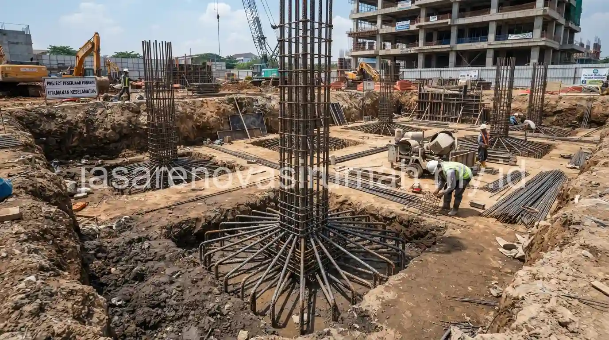

Jenis pondasi rumah yang umum digunakan di Indonesia meliputi pondasi batu kali untuk rumah 1 lantai di tanah keras, pondasi cakar ayam untuk rumah 1-2 lantai dengan kondisi tanah sedang, hingga pondasi bore pile untuk tanah lunak atau bangunan bertingkat lebih tinggi.
Pemilihan jenis pondasi yang tepat sangat menentukan kekuatan dan keawetan struktur rumah dalam jangka panjang, sehingga tidak boleh ditentukan sembarangan tanpa mempertimbangkan kondisi tanah di lokasi pembangunan.
Apa Saja Jenis Pondasi Rumah yang Umum Digunakan dan Karakteristiknya?
Tiga jenis pondasi yang paling umum digunakan untuk rumah tinggal di Indonesia adalah pondasi batu kali, pondasi cakar ayam (foot plate), dan pondasi bore pile atau tiang pancang.
Berikut perbandingan karakteristik ketiga jenis pondasi tersebut:
| Jenis Pondasi | Karakteristik | Cocok Untuk |
|---|---|---|
| Batu kali | Menggunakan susunan batu belah dan campuran semen, kedalaman terbatas | Rumah 1 lantai di tanah keras dan stabil |
| Cakar ayam (foot plate) | Struktur beton bertulang berbentuk telapak di titik kolom | Rumah 1-2 lantai dengan kondisi tanah sedang |
| Bore pile / tiang pancang | Tiang beton yang ditanam hingga kedalaman tanah keras | Tanah lunak, bangunan bertingkat, atau lahan bekas rawa |
Setiap jenis pondasi memiliki kedalaman dan metode pengerjaan yang berbeda, sehingga biaya dan waktu pengerjaannya pun bervariasi tergantung kompleksitas kondisi tanah di lokasi proyek.
Bagaimana Cara Memilih Jenis Pondasi yang Tepat Sesuai Kondisi Tanah?
Cara paling akurat untuk menentukan jenis pondasi adalah melakukan uji tanah (soil test) terlebih dahulu, agar diketahui daya dukung tanah pada kedalaman tertentu sebelum menentukan jenis dan dimensi pondasi yang sesuai.
Beberapa langkah yang biasa dilakukan dalam menentukan jenis pondasi:
- Melakukan uji tanah sederhana atau sondir untuk mengetahui kekerasan dan daya dukung tanah.
- Mempertimbangkan jumlah lantai bangunan yang direncanakan, karena beban struktur akan berbeda signifikan.
- Memeriksa riwayat lahan, misalnya apakah lokasi tersebut bekas rawa, sawah, atau area urukan yang berpotensi memiliki tanah lunak.
- Berkonsultasi dengan insinyur struktur atau kontraktor berpengalaman untuk menentukan rekomendasi akhir jenis pondasi.
Tanah di kawasan bekas rawa atau dekat aliran sungai umumnya memerlukan jenis pondasi yang lebih dalam seperti bore pile, meski secara biaya lebih tinggi dibanding pondasi batu kali konvensional, demi memastikan kestabilan bangunan dalam jangka panjang.
Apakah Kebutuhan Pondasi Rumah 1 Lantai dan 2 Lantai Berbeda?
Kebutuhan pondasi rumah 2 lantai umumnya lebih kompleks dibanding rumah 1 lantai, karena beban struktur yang harus ditopang jauh lebih besar akibat penambahan lantai di atasnya.
Rumah 1 lantai di tanah keras masih bisa menggunakan pondasi batu kali dengan kedalaman standar, sementara rumah 2 lantai umumnya membutuhkan pondasi cakar ayam atau kombinasi dengan sloof yang lebih kuat untuk mendistribusikan beban secara merata.
Perencanaan pondasi yang kurang tepat pada rumah bertingkat berpotensi menyebabkan retak struktural di kemudian hari, sehingga tahap ini sebaiknya tidak dilewati begitu saja demi menghemat biaya di awal.
Sebagai gambaran komponen biaya struktur pondasi dalam keseluruhan anggaran pembangunan, Anda bisa mempelajari lebih lanjut pada panduan biaya bangun rumah per m2, di mana pekerjaan struktur termasuk pondasi biasanya menyerap porsi terbesar dari total anggaran konstruksi.
Kesalahan Umum Saat Menentukan Jenis Pondasi Rumah
Kesalahan yang paling sering terjadi adalah menyamaratakan jenis pondasi tanpa melakukan pengecekan kondisi tanah terlebih dahulu, sehingga pondasi yang dipilih tidak sesuai dengan daya dukung tanah sebenarnya.
Kesalahan lain yang perlu dihindari:
- Mengabaikan riwayat penggunaan lahan sebelumnya, terutama untuk lahan hasil urukan.
- Memilih pondasi termurah tanpa mempertimbangkan rencana penambahan lantai di masa depan.
- Tidak melibatkan insinyur struktur untuk proyek dengan kondisi tanah yang meragukan.

Pada akhirnya, memilih jenis pondasi rumah yang tepat membutuhkan pemahaman kondisi tanah dan beban struktur yang akan ditopang, bukan sekadar mengikuti kebiasaan umum di lingkungan sekitar.
Untuk memastikan pondasi rumah Anda sesuai standar dan kondisi lahan, konsultasikan kebutuhan ini dengan tim jasa kontraktor rumah kami yang dapat melakukan survey dan rekomendasi jenis pondasi yang tepat.